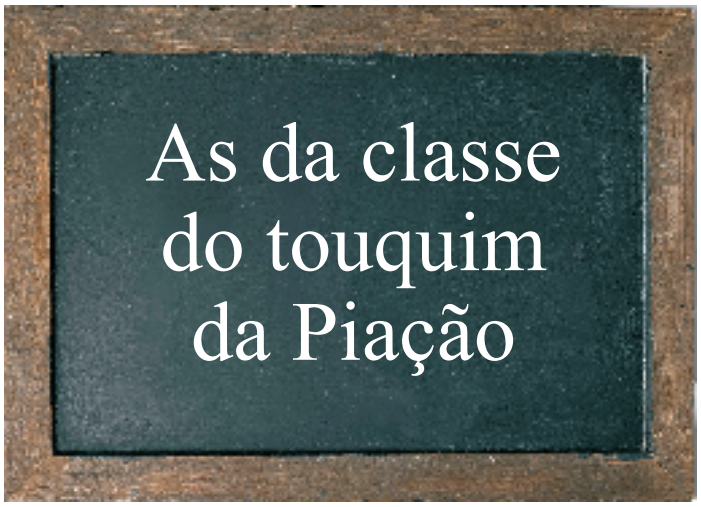
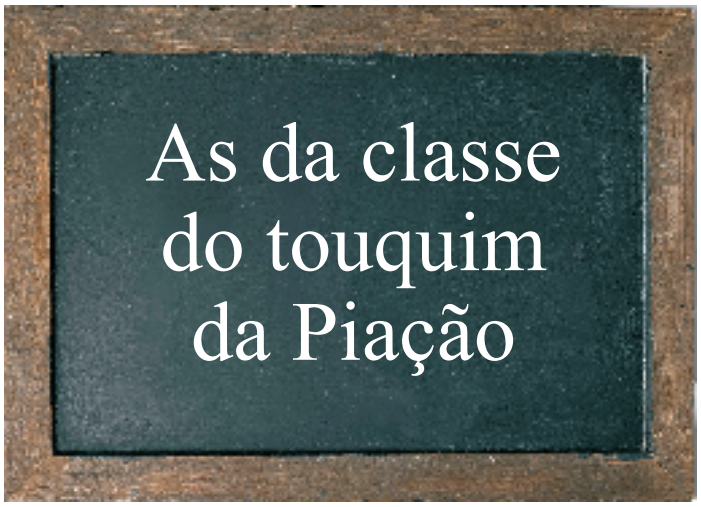

Aguenta-chaveca |
Corpo Humano |
|---|---|
aguentas, aguentos |
ombros |
| arranhadoras de gâmbia | unhas (das mãos) |
| arranhadoras dos catronhos | unhas (dos pés) |
| as do joão das penhas, santamaras | pernas |
| atafona | barriga |
| caçoa | orelha |
| carrasquinhas, pataeiras | seios |
| catronho | pé |
| chaveca, caturra, torre | cabeça |
| coçador | joelho |
| cortiços | costas |
| cruzeiros | braços |
| curseiro | cabelo |
| desiguais | dedos |
| frageleiro | pescoço |
| gâmbia | mão |
| mané-sousa | pénis |
| mioleira | testa |
| o de arraiolos | cabelo, pêlo |
| o das caçoas | ouvido |
| teresa da gaga, regueira de val-milheiro | vagina |
| tic-tac, bate-bate do da morcela | coração |
| torquelho | rabo |
 http://www.cidles.eu/ltll/labs-wordbyword
http://www.cidles.eu/ltll/labs-wordbyword
A da classe do touquim nº5 de 12
Colecção "As da classe do touquim da Piação d'O Touquim Xaral"